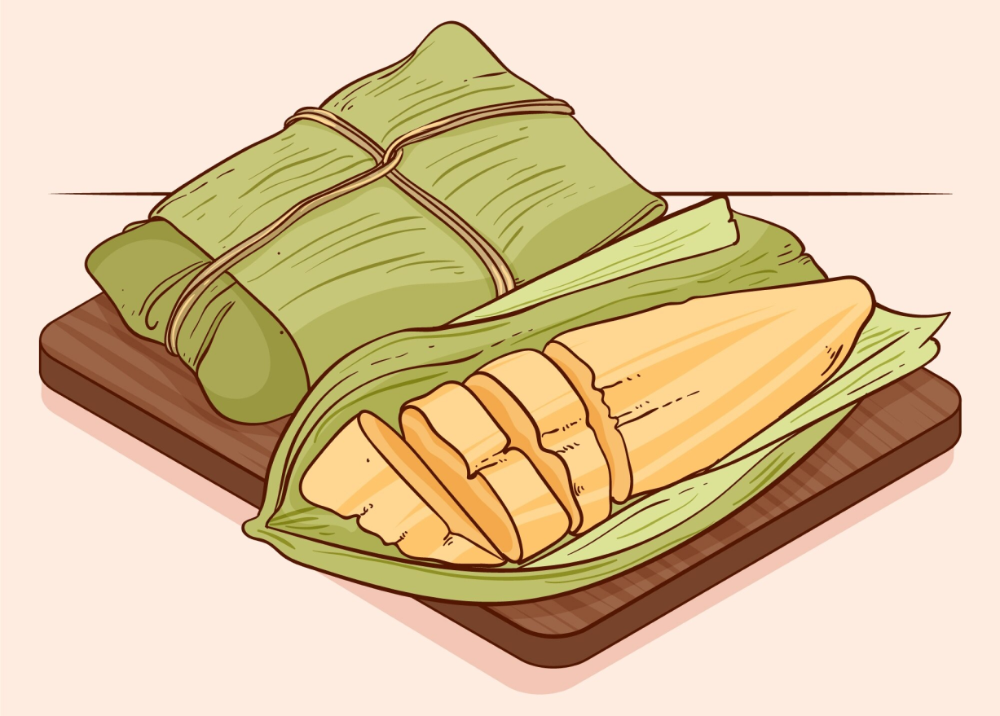

Pamonha
Prato típico com milho verde ralado
Porções
- 1 espiga de milho verde
- 1 colher de sopa de açúcar
- 1 colher de sopa de manteiga
- Sal a gosto
- Palha de milho (para embrulhar)
Ingredientes
- Descasque a espiga de milho e corte os grãos.
- Bata o milho, açúcar, manteiga e sal no liquidificador.
- Coloque a massa nas palhas de milho e feche bem.
- Cozinhe em água fervente por cerca de 40 minutos
- Deixe esfriar e sirva.